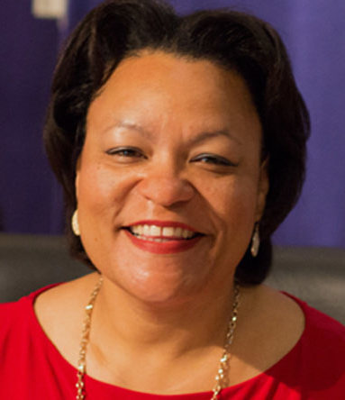

The holiday of Mardi Gras is celebrated in all of Louisiana, including the city of New Orleans. Celebrations are concentrated for about two weeks before and through Shrove Tuesday, the day before Ash Wednesday (the start of lent in the Western Christian tradition). Usually there is one major parade each day (weather permitting); many days have several large parades. The largest and most elaborate parades take place the last five days of the Mardi Gras season. In the final week, many events occur throughout New Orleans and surrounding communities, including parades and balls (some of them masquerade balls).
The parades in New Orleans are organized by social clubs known as krewes; most follow the same parade schedule and route each year. The earliest-established krewes were the Mistick Krewe of Comus, the earliest, Rex, the Knights of Momus and the Krewe of Proteus. Several modern "super krewes" are well known for holding large parades and events, such as the Krewe of Endymion (which is best known for naming celebrities as grand marshals for their parades), the Krewe of Bacchus (similarly known for naming celebrities as their Kings), as well as the Zulu Social Aid & Pleasure Club—a predominantly African American krewe. Float riders traditionally toss throws into the crowds. The most common throws are strings of colorful plastic beads, doubloons, decorated plastic "throw cups", Moon Pies, and small inexpensive toys, but throws can also include lingerie and more sordid items. Major krewes follow the same parade schedule and route each year.
While many tourists center their Carnival season activities on Bourbon Street and in New Orleans and Dauphin, major parades originate in the Uptown and Mid-City districts and follow a route along St. Charles Avenue and Canal Street, on the upriver side of the French Quarter. Mardi Gras day traditionally concludes with the "Meeting of the Courts" between Rex and Comus.
The Mayor of New Orleans, Louisiana.
LaToya Cantrell (born April 3, 1972) is an American politician serving as the Mayor of New Orleans, Louisiana, a post she has held since May 7, 2018. Cantrell, a Democrat, is the first black woman to hold the post. Before becoming mayor, Cantrell represented District B on the New Orleans City Council from 2012–2018.
Cantrell was inaugurated as mayor on May 7, 2018, the first woman to hold the position in the city's history. Once in office, she established a new Office of Youth and Families, with the goal of creating a strategic plan to address families in crisis in the city. Cantrell also founded a Gun Violence Reduction Council tasked with finding solutions to violent crime. Starting with a push to rededicate hotel taxes collected within the city for city use, Cantrell has focused on her #fairshare initiative to improve city infrastructure, public transportation, public parks, and green spaces. As part of that initiative, in October 2018 the City of New Orleans filed a lawsuit against four opioid manufactures and distributors